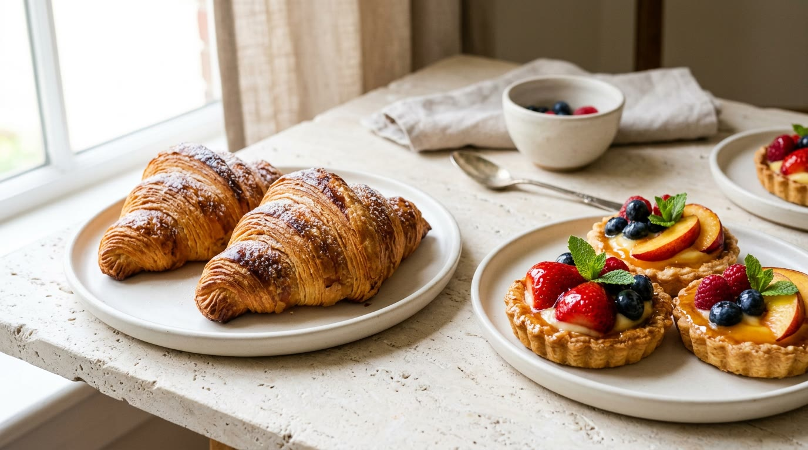

Fragrance
Sculptural Fragrance Editorial
Pemotretan botol parfum dengan tekstur travertine dan refleksi cahaya alami.
Gallery fotografi produk untuk beauty, fragrance, food & beverage, fashion, arsitektur, dan katalog komersial brand.
Pilihan fotografi produk komersial untuk kebutuhan katalog, e-commerce, dan materi kampanye brand.
Pemotretan botol parfum dengan tekstur travertine dan refleksi cahaya alami.
Foto katalog skincare dengan pencahayaan studio lembut dan podium akrilik bening.
Fotografi minuman dark-moody untuk menu kafe, iklan digital, dan materi promo F&B.

Editorial food styling dengan pencahayaan pagi alami yang menonjolkan tekstur hidangan.
Foto still-life aksesori dan produk kulit untuk lookbook serta halaman e-commerce.
Fotografi eksterior gedung dan properti di waktu blue hour dengan garis perspektif presisi.